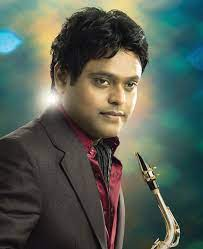
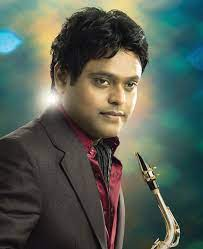

SING IN THE RAIN
Our Music Your Melody
About : "Sing in the Rain" is a proprietary Swedish audio streaming and media services provider founded on 23 April 2006 by Swetha. It is one of the largest music streaming service providers, with over 433 million monthly active users, including 188 million paying subscribers, as of June 2022.
Date launched: 23 April 2006
Founded: 23 April 2006; 16 years ago
Employees: 9,058 (June 2022)
Headquarters: Chennai, Tamil Nadu, India.
No. of locations: 15 offices
Traded as: NYSE: SPOT; Russell 1000 component
Founder: Swetha;


 
Anirudh Songs A R Rahman Songs Yuvan Shankar Raja Songs Harris Jayaraj Songs Stephen Zechariah Songs Illaya Raja Songs

Anirudh Songs A R Rahman Songs Yuvan Shankar Raja Songs Harris Jayaraj Songs Stephen Zechariah Songs Illaya Raja Songs


 GV Prakash Kumar Songs Hip Hop Tamizha Songs Imman Songs
GV Prakash Kumar Songs Hip Hop Tamizha Songs Imman Songs